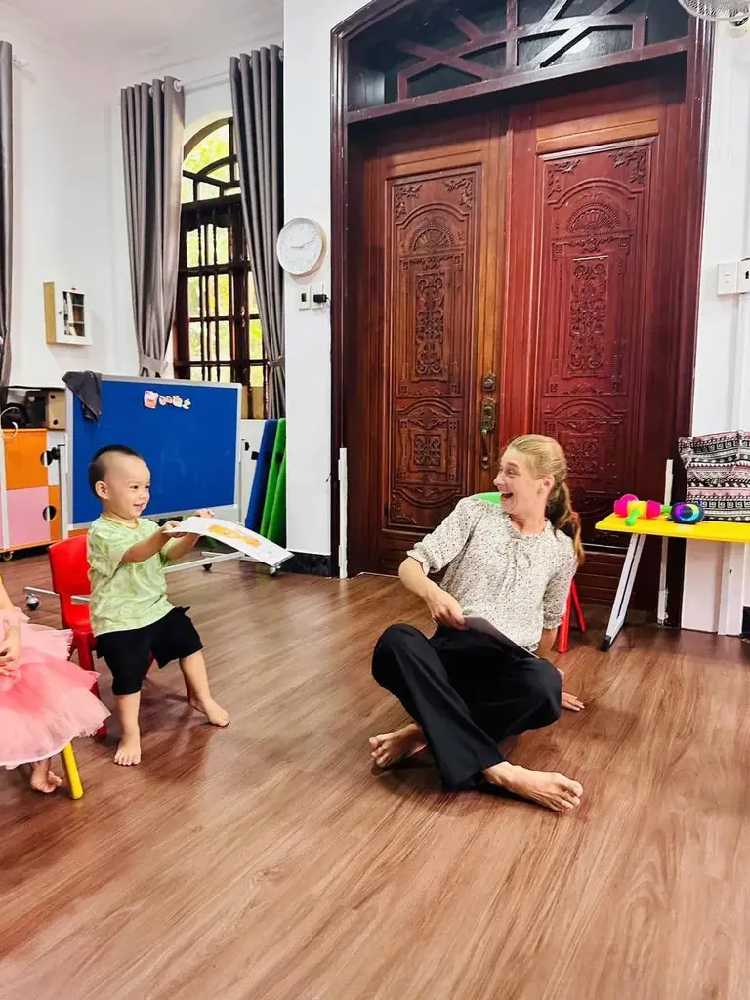

TIẾNG ANH CHO TRẺ
ChÆ°Æ¡ng trình tiếng Anh mầm non tại Mầm non Bình Minh (DAWN Kindergarten): bé há»c ngoại ngữ tá»± nhiên nhÆ° tiếng mẹ đẻ, qua trò chÆ¡i, bà i hát và sinh hoạt hằng ngà y.
THỜI ÄIỂM VÀNG 0–6 TUá»”I
Giai Ä‘oạn 0-6 tuổi là "thá»i Ä‘iểm và ng" để trẻ tiếp thu ngôn ngữ má»™t cách tá»± nhiên nhất. Tại TP. VÅ©ng Tà u, nhiá»u phụ huynh tìm lá»›p tiếng Anh mầm non cho con ngay từ báºc há»c đầu Ä‘á»i để bé là m quen ngôn ngữ thứ hai trÆ°á»›c khi bÆ°á»›c và o tiểu há»c.
Trẻ nhá» há»c ngôn ngữ qua nghe - nói - chÆ¡i, không sợ sai, giống cách há»c tiếng mẹ đẻ.
Giai Ä‘oạn 0-6 tuổi trẻ dá»… bắt chÆ°á»›c ngữ Ä‘iệu và âm Ä‘iệu bản xứ khi được nghe giáo viên nÆ°á»›c ngoà i thÆ°á»ng xuyên.
Song ngữ giúp trẻ linh hoạt tÆ° duy, tăng khả năng táºp trung và giải quyết vấn Ä‘á».
Trẻ mạnh dạn thể hiện bản thân, tự tin nghe - nói trước đám đông và bạn bè.
CHÆ¯Æ NG TRÃŒNH TIẾNG ANH TẠI VŨNG TÀU
Khác vá»›i lá»›p há»c tiếng Anh truyá»n thống, chÆ°Æ¡ng trình tiếng Anh cho trẻ của trÆ°á»ng được lồng ghép tá»± nhiên và o sinh hoạt hằng ngà y — Ä‘iá»u mà ba mẹ khó tái hiện trá»n vẹn tại nhà .
Từ vá»±ng và mẫu câu theo Ä‘á»™ tuổi được tiếp thu qua trò chÆ¡i tÆ°Æ¡ng tác, váºn Ä‘á»™ng và hoạt Ä‘á»™ng thủ công.
Bà i hát và vần Ä‘iệu tiếng Anh giúp trẻ nhá»› từ vá»±ng lâu, phát triển ngữ Ä‘iệu tá»± nhiên nhÆ° ngÆ°á»i bản xứ.
Câu lạc bộ Kể chuyện tiếng Anh giúp trẻ là m quen cấu trúc câu, phát triển phản xạ giao tiếp và trà tưởng tượng.
Giáo viên tiếng Anh / nước ngoà i tạo không khà thoải mái, giúp bé tự tin nghe - nói từ những lần đầu tiên.
TIẾNG ANH TRONG SINH HOẠT
Chà o buổi sáng, đếm số, gá»i tên mà u sắc — tiếng Anh bắt đầu từ những câu giao tiếp Ä‘Æ¡n giản nhất.
Giá» há»c tiếng Anh theo chủ Ä‘á»: từ vá»±ng, mẫu câu, trò chÆ¡i đóng vai cùng giáo viên bản ngữ.
Từ vựng vỠmón ăn, đồ dùng được ôn lại nhẹ nhà ng trong bữa ăn và giỠsinh hoạt.
Thủ công, tô mà u, bà i hát váºn Ä‘á»™ng giúp bé ôn tiếng Anh không áp lá»±c, vui vẻ.
HỌC TIẾNG ANH TRẺ EM
Ở trÆ°á»ng, trẻ được há»c tiếng Anh cùng bạn bè trong môi trÆ°á»ng có nhiá»u hoạt Ä‘á»™ng tÆ°Æ¡ng tác — yếu tố quan trá»ng giúp trẻ tiến bá»™ nhanh hÆ¡n há»c má»™t mình tại nhà . ChÆ°Æ¡ng trình được thiết kế lấy trẻ là m trung tâm, theo triết lý "Grow with Nature" của nhà trÆ°á»ng.

Từ 6 tháng đến 5 tuổi, giai Ä‘oạn và ng tiếp thu ngôn ngữ, DAWN Kindergarten đồng hà nh cùng con qua tiếng Anh trong giá» há»c, giá» chÆ¡i và sinh hoạt má»—i ngà y.
CÂU HỎI THƯỜNG GẶP
Có. DAWN Kindergarten lồng ghép tiếng Anh tự nhiên và o sinh hoạt và các hoạt động trải nghiệm hằng ngà y của bé, giúp trẻ là m quen ngôn ngữ thứ hai qua trò chơi, bà i hát và câu chuyện trong giai đoạn và ng 0-6 tuổi.
Mầm non Bình Minh nháºn trẻ từ 6 tháng đến 5 tuổi, vá»›i chÆ°Æ¡ng trình và giáo viên phù hợp theo từng Ä‘á»™ tuổi.
Bé há»c qua trò chÆ¡i tÆ°Æ¡ng tác, bà i hát, kể chuyện và hoạt Ä‘á»™ng đóng vai cùng giáo viên bản ngữ nhằm phát triển phản xạ giao tiếp nghe - nói tá»± nhiên.
Phụ huynh vui lòng liên hệ hotline 0866 685 632 hoặc ghé trÆ°á»ng tại 75/2A Phạm Hồng Thái, PhÆ°á»ng 7, TP. VÅ©ng Tà u để được tÆ° vấn há»c phà và tham quan môi trÆ°á»ng há»c táºp của bé.
Äăng ký tham quan trÆ°á»ng và tìm hiểu chÆ°Æ¡ng trình tiếng Anh mầm non phù hợp vá»›i con bạn.
Tìm hiểu thêm: ChÆ°Æ¡ng trình há»c tổng quan